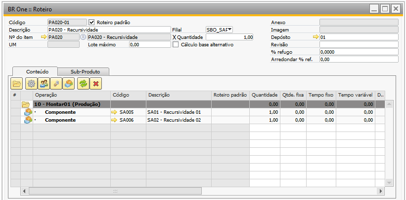

Relátorio de Recursividade de Roteiro
A recursividade no SAP Business One refere-se à capacidade de um objeto ou processo se referir a si mesmo repetidamente para realizar uma determinada tarefa. Em outras palavras, é quando um objeto ou função chama a si mesmo durante a execução.
Por exemplo, considere uma estrutura de produto em uma indústria, onde um Produto Acabado (PA) pode ser composto por vários Semi Acabados (SA), e esses Semi Acabados, por sua vez, podem ser compostos por outros Semi Acabados ou até mesmo por Matérias-Primas.
Visando facilitar a identificação e análise dessas estruturas foi implementado a funcionalidade “BR One Produção: Verificação de roteiros recursivos”, que pode ser encontrado no caminho abaixo:
Ajuda -> Suporte Desk -> Restaurar -> BR One -> BR One Produção: Verificação de roteiros recursivos

Este processo realiza uma verificação no roteiro padrão dos itens, e ao encontrar uma recursividade para o mesmo, ela para a busca para este componente e passa para o próximo. Desta forma sempre será mostrado nos resultados apenas a primeira recursividade encontrada para um componente.
No exemplo abaixo o produto acabado PA020 possui um roteiro padrão onde há dois semi acabados, o SA005 e o SA006.
{kind=link}
Ambos os SA’s do roteiro anterior, possuem roteiro padrão e neste há como componente o próprio PA020, ocasionando assim a recursividade.
{kind=link}
{kind=link}
Desta forma se executarmos a funcionalidade “BR One Produção: Verificação de roteiros recursivos” teremos o seguinte retorno:
{kind=link}
Conforme exemplo acima, o PA020 possui recursividade com o SA005 e o SA006, porém, é retornado em tela apenas a primeira recursividade encontrada para o componente. Neste caso o addon encontrou primeiro e retornou apenas a recursividade do PA020 com o SA005, ao encontrar ela, o addon para a busca e parte para a análise do próximo item, retornando assim a recursividade do PA021 com o SA007.
Para corrigir uma recursividade, o usuário deve remover do roteiro padrão de um dos componentes do item que está recursivo, em nosso exemplo foi removido o PA020 do roteiro padrão do SA005.
Com a remoção da recursividade entre o PA020 e SA005 o addon irá retornar a outra recursividade encontrada para o PA, em nosso exemplo é esperado que seja retornado a recursividade entre o SA006 e o PA020.
Ao executar novamente a funcionalidade “BR One Produção: Verificação de roteiros recursivos”, temos o seguinte retorno:
{kind=link}
Observa-se que agora o addon encontrou a segunda recursividade existente para o PA020, neste caso ele para a execução para este componente e passa para outro, encontrando assim novamente a recursividade entre o PA020 e o SA006.
Se removermos a recursividade do roteiro padrão do componente SA006 com o PA020 e executarmos novamente a funcionalidade “BR One Produção: Verificação de roteiros recursivos”, temos o seguinte retorno:

E caso removamos a recursividade entre o SA007 e o PA021, ao executarmos a funcionalidade “BR One Produção: Verificação de roteiros recursivos”, não será encontrado nenhum resultado de recursividade de componente para a base utilizada e o addon retornará a mensagem abaixo:
{kind=link}